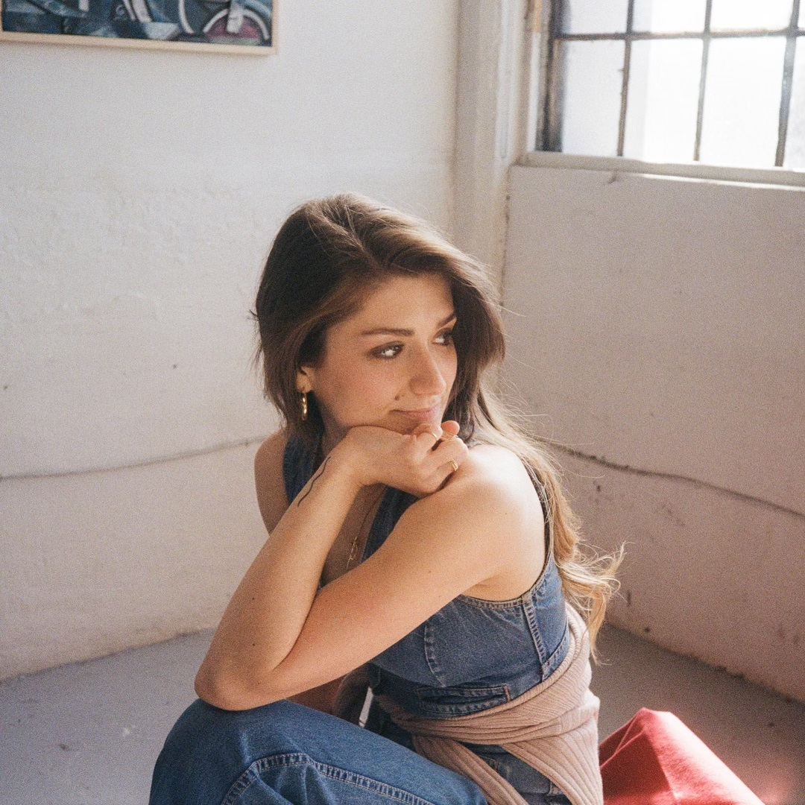

But while we got this weather, we can call me better.
Or we'll spend forever thinking something's wrong.
Thinking something's wrong.
Double taps.
Silent laughs.
Know a party we can crash?
Check your phone.
Check again.
No, I choke.
Yep, that's how we make new friends.
How's you week?
What'd you do?
“Oh, you know, I just got through.”
That's not fair.
Tell me more.
Show me who you're working for.
“It's not bad, they're all nice.”
I'm afriad my father's right.
I have less than I owe.
And I just watch the sun go.
And talk about the weather, putting me together.
Might not be forever, might not be for long.
But while we got this weather, we can call me better.
Or we'll spend forever thinking something's wrong.
Thinking something's wrong.
Something's always wrong.
Let's talk about the weather, putting me together.
Might not be forever, might not be for long.
But while we got this weather, we can call me better.
Or we'll spend forever thinking something's wrong.
Thinking something's wrong.
[Not verified.]
Music video credits.
Directed by Minya Djacic
Little Apricot Films
Nina Djacic, cinematographer.
Kendra Legault, art director.
Aiden Carter, 1st assistant camera.
Marc Ashish, 2nd assistant camera.
Dakota Mazzuca, gaffer.
Rikki Dimailg, swing.
Mays Awad, behind-the-scenes.
Minya Djacic, editor.

Entry 128.
For this video shoot, I got my first manicure in 7 years. I’d resigned myself to hating the way my hands looked, accepting critical thoughts with the reminder that my hands do all my favourite things. They knead dough, they mix batter, they flip pancakes and give pats to cats. My hands have guitar callouses and knife callouses and rolling pin callouses. My left hand awkwardly reaches wider than my right, from years of tryna get from C to E to hit that 10th.
I thought they were too worked-in to bother with painted nails, but I was wrong. Cause holy, that shit feel nice. You can be colourful and useful at the same time! You can be smart and productive AND care about sparkly dancing fingers on a keyboard. It’s actually much more fun to write emails this way, and my productivity may have hit an all-time high. An affinity for life’s frivolous decorations does not diminish your intelligence or usefulness. It isn’t shallow to colour the dullness of a grey April. I’m grateful for all the things my hands have learned to do, so maybe it’s only right for me to show them a little love now and then. So cheers to getting manicures more than once a decade! We all deserve it.
Entry 110.
I wrote “Do You Smoke?” in the summer, on the last day that public pools were open in Toronto. It was the best kind of day off. Hot skin, hot concrete, cold wet hair and a damp towel. It all feels more like home than my own couch. I lay beside friends, who know that choosing to put my headphones in doesn’t signify disinterest in them, but rather peak contentment in my surroundings. Friends that, like me, choose to ignore the grossness of city pools in favour of how they bring us together.